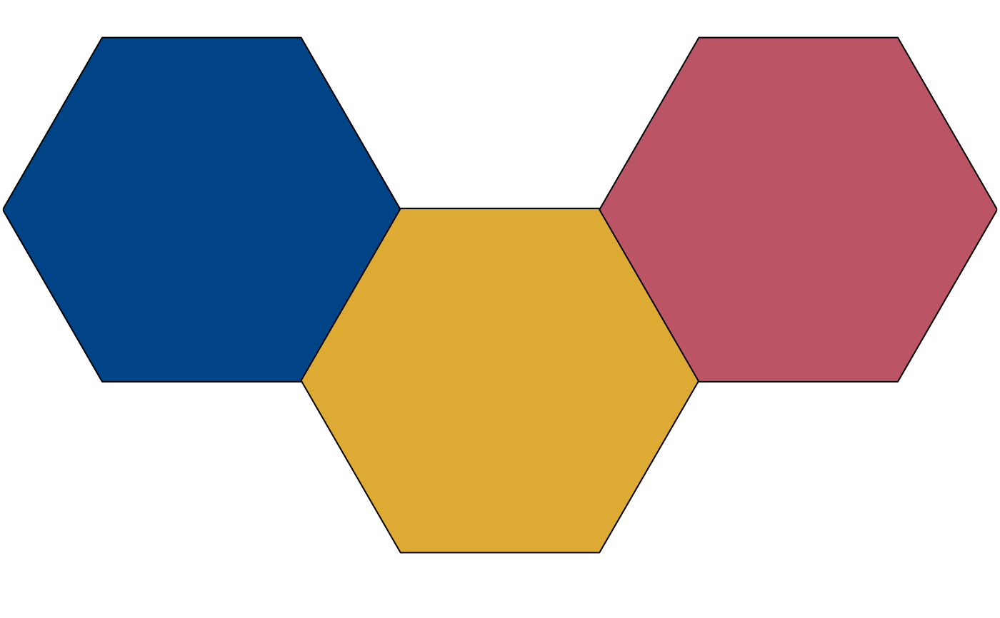
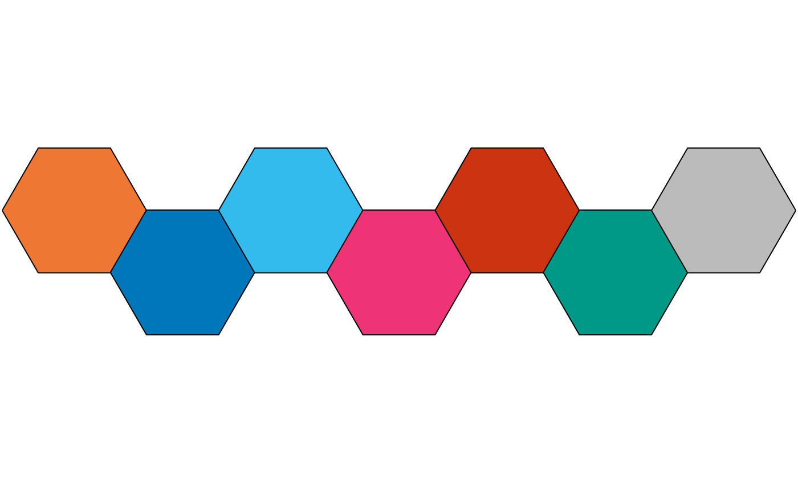
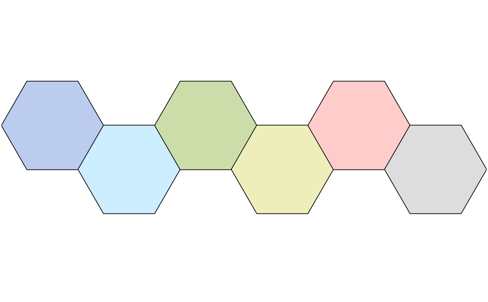
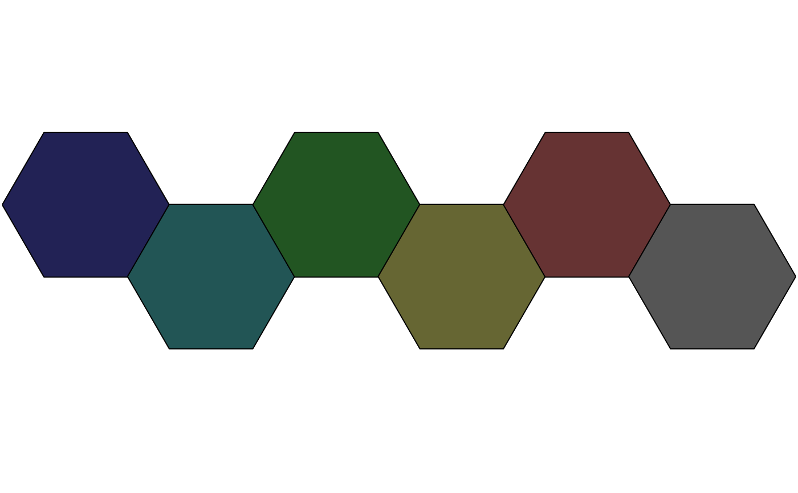
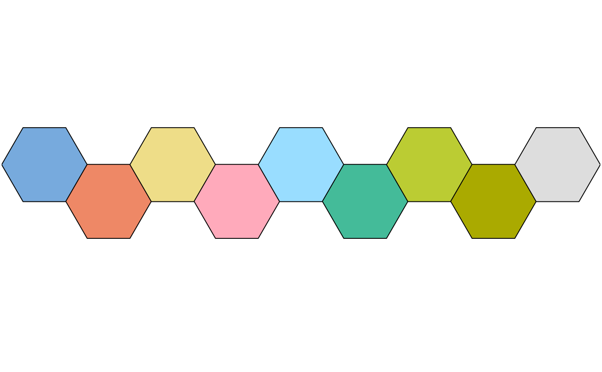
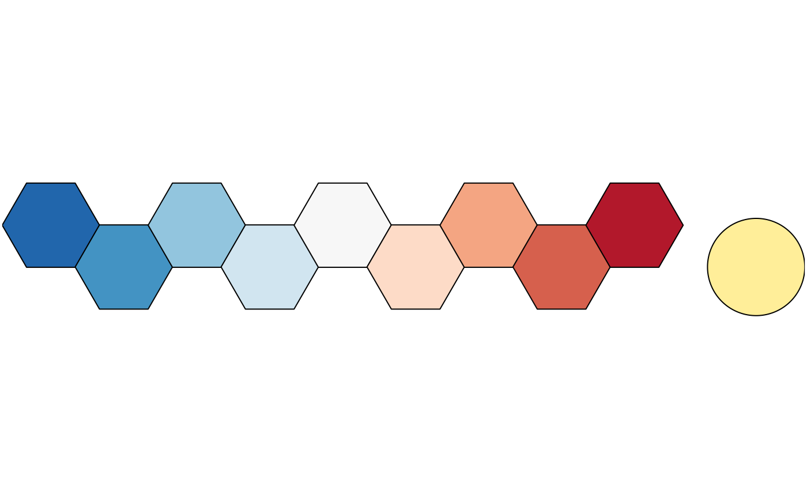
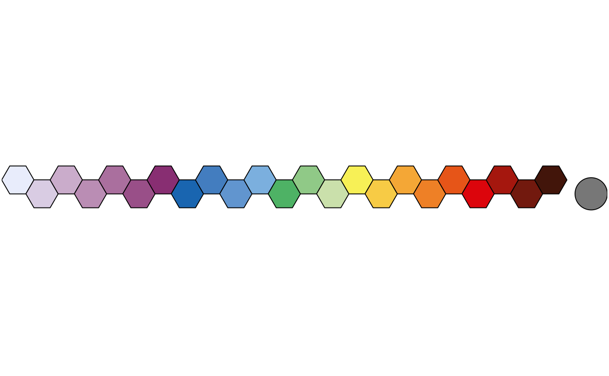
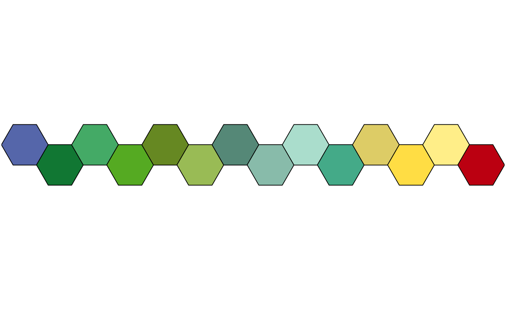

Provides qualitative, diverging and sequential color schemes.
Usage
colour(palette, reverse = FALSE, names = TRUE, lang = "en", force = FALSE, ...)
color(palette, reverse = FALSE, names = TRUE, lang = "en", force = FALSE, ...)Arguments
- palette
A
characterstring giving the name of the palette to be used (see below).- reverse
A
logicalscalar: should the resulting vector of colors should be reversed?- names
A
logicalscalar: should the names of the colors should be kept in the resulting vector?- lang
A
characterstring specifying the language for the color names. It must be one of "en" (English, the default) or "fr" (French).- force
A
logicalscalar. IfTRUE, forces the color scheme to be interpolated. It should not be used routinely with qualitative color schemes, as they are designed to be used as is to remain color-blind safe.- ...
Further arguments passed to colorRampPalette.
Value
A palette function with the following attributes, that when called with a single integer argument (the number of levels) returns a (named) vector of colors.
- palette
A
characterstring giving the name of the color scheme.- type
A
characterstring giving the corresponding data type. One of "qualitative", "diverging" or "sequential".- interpolate
A
logicalscalar: can the color palette be interpolated?- missing
A
characterstring giving the the hexadecimal representation of the color that should be used forNAvalues.- max
An
integergiving the maximum number of color values. Only relevant for non-interpolated color schemes.
For color schemes that can be interpolated (diverging and sequential data),
the color range can be limited with an additional argument. range allows
to remove a fraction of the color domain (before being interpolated; see
examples).
Paul Tol's Color Schemes
The following palettes are available. The maximum number of supported colors is in brackets, this value is only relevant for the qualitative color schemes (divergent and sequential schemes are linearly interpolated).
- Qualitative data
bright(7),high contrast(3),vibrant(7),muted(9),medium contrast(6),pale(6),dark(6),light(9).- Diverging data
sunset(11),BuRd(9),PRGn(9).- Sequential data
YlOrBr(9),iridescent(23),discrete rainbow(23),smooth rainbow(34).
Qualitative Color Schemes
According to Paul Tol's technical note, the bright, highcontrast,
vibrant and muted color schemes are color-blind safe. The
mediumcontrast color scheme is designed for situations needing color
pairs.
The light color scheme is reasonably distinct for both normal or
colorblind vision and is intended to fill labeled cells.
The pale and dark schemes are not very distinct in either normal or
colorblind vision and should be used as a text background or to highlight
a cell in a table.
Refer to the original document for details about the recommended uses (see references).
Rainbow Color Scheme
As a general rule, ordered data should not be represented using a rainbow scheme. There are three main arguments against such use (Tol 2018):
The spectral order of visible light carries no inherent magnitude message.
Some bands of almost constant hue with sharp transitions between them, can be perceived as jumps in the data.
Color-blind people have difficulty distinguishing some colors of the rainbow.
If such use cannot be avoided, Paul Tol's technical note provides two color schemes that are reasonably clear in color-blind vision. To remain color-blind safe, these two schemes must comply with the following conditions:
discreterainbowThis scheme must not be interpolated.
smoothrainbowThis scheme does not have to be used over the full range.
Okabe and Ito Color Scheme
The following (qualitative) color scheme is available:
okabeitoUp to 8 colors.
okabeito blackUp to 8 colors, with black as the last.
Scientific Color Schemes
The following (qualitative) color schemes are available:
stratigraphyInternational Chronostratigraphic Chart (175 colors).
landAVHRR Global Land Cover Classification (14 colors).
soilFAO Reference Soil Groups (24 colors).
References
Jones, A., Montanarella, L. & Jones, R. (Ed.) (2005). Soil atlas of Europe. Luxembourg: European Commission, Office for Official Publications of the European Communities. 128 pp. ISBN: 92-894-8120-X.
Okabe, M. & Ito, K. (2008). Color Universal Design (CUD): How to Make Figures and Presentations That Are Friendly to Colorblind People. URL: https://jfly.uni-koeln.de/color/.
Tol, P. (2021). Colour Schemes. SRON. Technical Note No. SRON/EPS/TN/09-002, issue 3.2. URL: https://personal.sron.nl/~pault/data/colourschemes.pdf
See also
Other color palettes:
info(),
ramp(),
scale_picker
Examples
## Okabe and Ito colour scheme
colour("okabe ito")(8)
#> black orange sky blue bluish green yellow
#> "#000000" "#E69F00" "#56B4E9" "#009E73" "#F0E442"
#> blue vermilion reddish purple
#> "#0072B2" "#D55E00" "#CC79A7"
#> attr(,"missing")
#> [1] NA
plot_scheme(colour("okabe ito")(8))
 ## Paul Tol's colour schemes
### Qualitative data
plot_scheme(colour("bright")(7))
## Paul Tol's colour schemes
### Qualitative data
plot_scheme(colour("bright")(7))
 plot_scheme(colour("high contrast")(3))
plot_scheme(colour("high contrast")(3))

plot_scheme(colour("vibrant")(7))

plot_scheme(colour("muted")(9))
 plot_scheme(colour("medium contrast")(6))
plot_scheme(colour("medium contrast")(6))
 plot_scheme(colour("pale")(6))
plot_scheme(colour("pale")(6))

plot_scheme(colour("dark")(6))

plot_scheme(colour("light")(9))

### Diverging data
plot_scheme(colour("sunset")(11))
 plot_scheme(colour("BuRd")(9))
plot_scheme(colour("BuRd")(9))

plot_scheme(colour("PRGn")(9))
 ### Sequential data
plot_scheme(colour("YlOrBr")(9))
### Sequential data
plot_scheme(colour("YlOrBr")(9))
 plot_scheme(colour("iridescent")(23))
plot_scheme(colour("iridescent")(23))
 plot_scheme(colour("discrete rainbow")(14))
plot_scheme(colour("discrete rainbow")(14))
 plot_scheme(colour("discrete rainbow")(23))
plot_scheme(colour("discrete rainbow")(23))

plot_scheme(colour("smooth rainbow")(34))
 ## Scientific colour schemes
### Geologic timescale
plot_scheme(colour("stratigraphy")(175))
## Scientific colour schemes
### Geologic timescale
plot_scheme(colour("stratigraphy")(175))
 ### AVHRR global land cover classification
plot_scheme(colour("land")(14))
### AVHRR global land cover classification
plot_scheme(colour("land")(14))

### FAO soil reference groups
plot_scheme(colour("soil")(24))
 ## Adjust colour levels
PRGn <- colour("PRGn")
plot_scheme(PRGn(9, range = c(0.5, 1)))
## Adjust colour levels
PRGn <- colour("PRGn")
plot_scheme(PRGn(9, range = c(0.5, 1)))